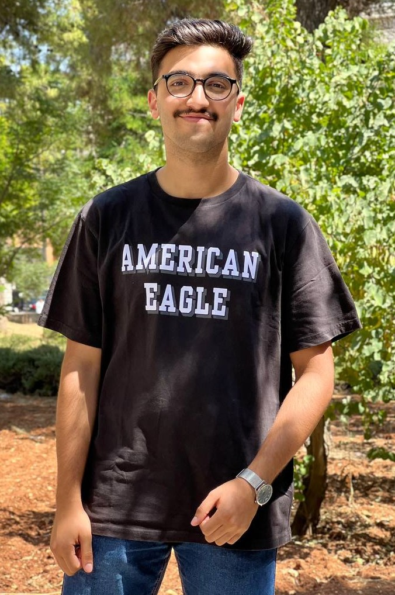

Owais AbuSonaina

Summary
A dedicated Artificial Intelligence student with a profound passion for the fields of computer vision, machine learning, and data analysis. As I progress through my academic journey towards earning a Bachelor's degree, my primary goal is to specialize in computer vision. My commitment to this specialized domain reflects my unwavering dedication to advancing the boundaries of computer vision technology and its applications in a rapidly evolving world.
Education
- Graduated From Al-Hassad School.
- Studeis the major of artificial intelligence right now at the university of Jordan.
Work Experience
- Worked at Mcdonald's for almost one and a half year as a part-time job.
Skills
- Machine Learning
- Python
- English as a second language
- Problem Solving
Contact
Facebook
Linkedin